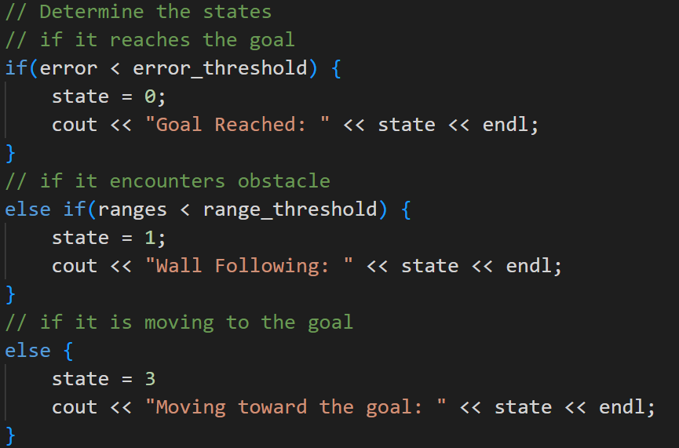
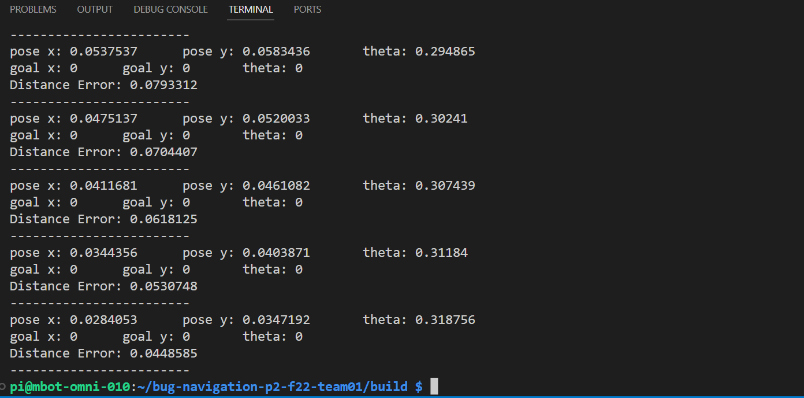

Algorithm Description:
The bug navigation algorithm is composed of three different states
(as shown in the left picture):
1. Stop the robot if it reaches the goal
There is a previous defined variable error_threshold, which is
used for comparing with the error (distance between the goal and robot current position).
Once the error is within an acceptable range, it will stop.
2. Do wall following if it encounters obstacle
There is a previous defined variable range_threshold, which is used for
comparing with the ranges (the distance from the nearest obstacle). Once the
ranges variable is within the threshold, the robot will start wall following
3. Move toward the goal at a reasonable speed and in an appropriate direction
The last possible state is moving toward the goal. The algorithm calculates the
moving angle by taking inverse tanget of error_y /error_x, and then
scale the velocity in both x and y direction proportionally to make the total velocity
has a value of 0.6 m/s.

Some Problems:
1. The odemetry information provided by the encoder is not accurate enough
This can be demonstrated by
the video of showing the performance of "hit the spot". Although the pose vector tells the robot
it is almost at the origin, but the distance from origin is actually bigger than the encoder thinks it is.
This error could be accumulated, so the further the robot travels, the bigger the error is.
2. The Algorithm might fail when there are multiple obstacles
The robot is likely to get stucked when it encounter the enviroment
where there are two close obstacles on its path to the goal.
Since the robot will try to avoid both obstacles, it will stuck in the wall following state
and sway between two obstacles.